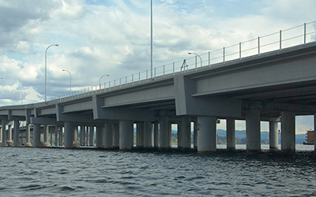
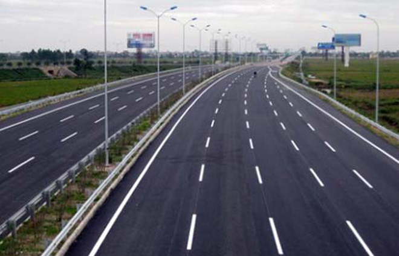
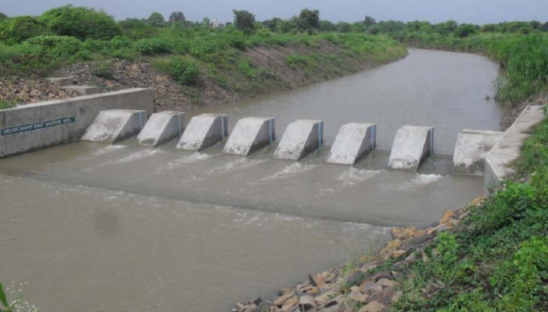
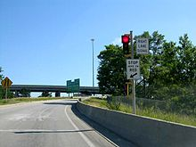
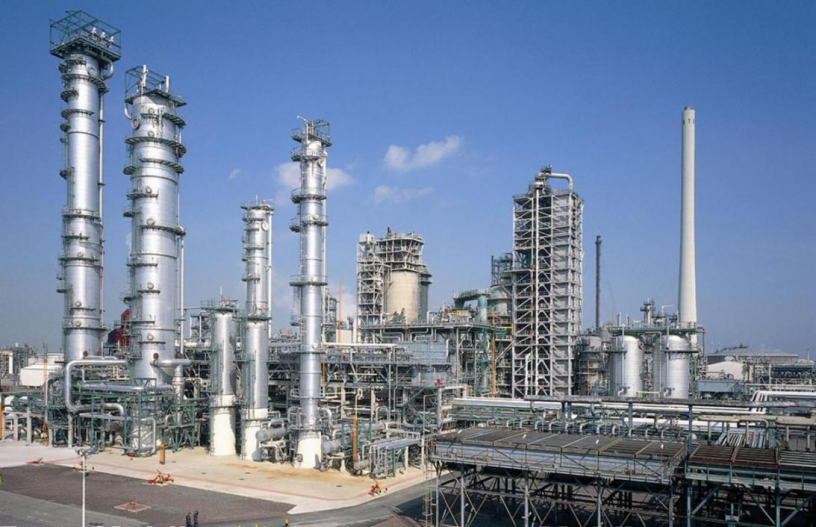
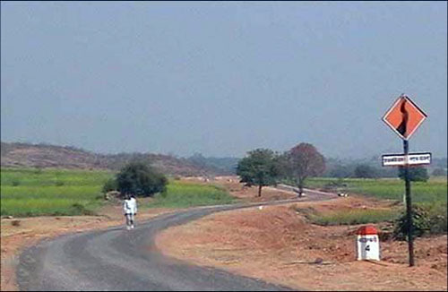
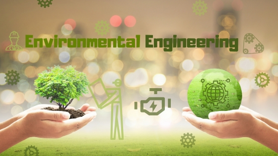
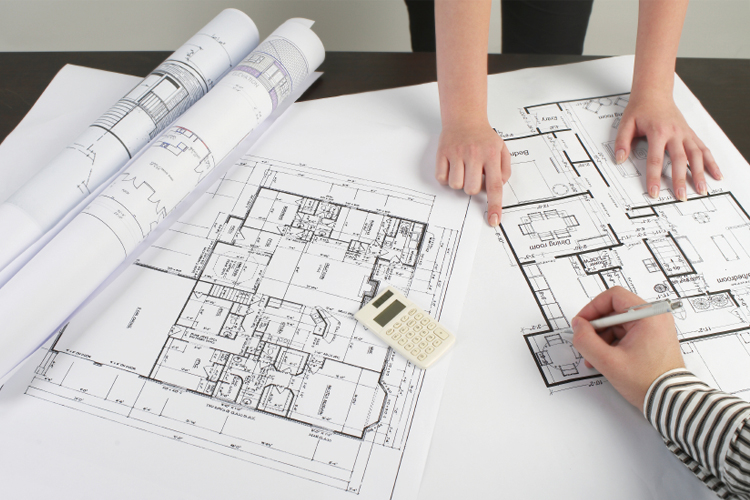

Areas which we covers

Bridges & Structures
RSI provides structural and hydraulic leadership for many districts, consultants and other units of government, with services for the design, construction and maintenance of bridges and structures. Design of Bridges forms an important part of our services. Our exclusiveness lies in the fact that we have in house capabilities of carrying out all the services related to bridge design such as Soil Investigation, Survey, Design of Super Structures, Foundation Engineering etc.
Highways
RSI’s projects include all types of highways, from local access roads and streets to major urban and rural strategic routes. For last many years we have been providing total engineering consultancy solutions for Detailed Project Report preparation of Roads & Highways. We are one of the few companies who can provide all inter related services of Highway Engineering like Soil Investigation, Survey, Design of Structures etc. under one roof.


Water Resources
RSI is concerned with the quality and availability of water which is the most important resource in the world. From urban to rural environments and from public agencies to private community efforts, RSI has been active in the management of water. With water-born diseases that can so drastically devastate a community, RSI has been involved in many successful projects which integrate Health, Water and Sanitation concerns. RSI works with water providers, public authorities and organizations across the world to manage water in a holistic and sustainable way.
Traffic & Transportation
RSI through its engineering and management efforts, has been associated with the movement of goods and people throughout the world. To stay current in this ever-accelerating race, we are constantly upgrading our resources and knowledge in order that we can provide quality assistance to our clients in providing a safe, efficient and reliable means of transportation. Our Transportation professionals provide feasibility, design and supervision services to governments, multilateral agencies, concessionaires and EPC clients globally. Having successfully completed several domestic, multilateral and PPP projects; we firmly believe that we are in a unique position to undertake various studies, planning, design and project management of linear transportation projects meeting timelines, desired costs and quality parameters. While developing new systems, we also help in the restoration and re-organisation of old infrastructure elements.


Industrial Infrastructure
RSI is a consultancy organization formed by professionals having wide range of experience in commercial, financial, regulatory and technical spheres of Construction and Infrastructure sectors. At the core of our business remains our commitment to deliver superior value to our clients. RSI support clients through all phases of their infrastructure program and project development.
Rural Development Sector
RSI has an extensive background with building local capacity and local economies through agricultural and rural development. We have successfully been able to improve livelihoods and capacity through the introduction of technologies and techniques that support sustainable development. A key focus has always been to balance the social elements and the environmental elements within any activity supporting agricultural and rural development, in an effort to uplift the region economically.


Environmental Engineering
Capitalizing on our experience of over many years, we have been managing nearly all aspects of environmental planning and sustainability, from regulatory compliance to green buildings. Our key focus is on energy efficiency, solid and hazardous waste management, environmental and energy management systems, ISO certification, LEED building certification, rain water harvesting, impact assessment studies and environmental monitoring. We have delivered more than 200 projects that have successfully cleared all stringent environmental prerequisites. We strongly believe that by shifting the energy burden from non-renewable to renewable resources, we can stand up to the challenges of the future.
Buildings
Architecture is the key to tomorrow’s built environments. At RSI, we believe that buildings serve a higher purpose. Great architecture shapes the human experience, improves the quality of the built environment and helps conserve the earth’s resources. Our goal, therefore is to cut through the complexity to enable easier and a better quality of life. RSI has been planning and designing complex projects for almost a decade. We have a global reputation for delivering affordable, well-built and inspiring work.
